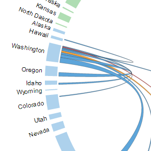
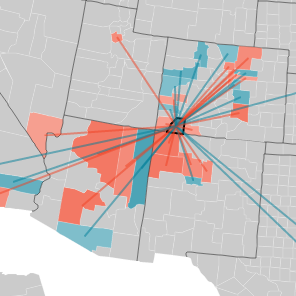
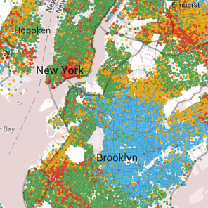

Visualizations - Outside Sources

2012 State Migration Flows
vizynary.com - Chris Walker

US County to County Migration
forbes.com - Forbes
Maps - Outside Sources

Race / Ethnicity - Dot Density
projects.nytimes.com - New York Times
Test